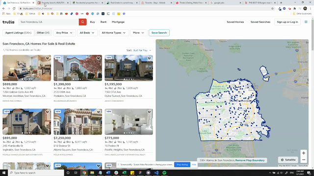

| Client | My Role | Skills |
|---|---|---|
| Chimney AI | User Interface Designer | User experience design User interface design |
Context
Chimney wants to be known as a place where you can find your dream home in a matter of minutes with the help of AI-powered recommendations based on buyers’ preferences and priorities.
For our MVP, the team wanted to build the foundations of the search process, namely, the results & property listings page. We wanted to show the most relevant neighbourhoods to the user and entice the user to click on the listing. Once on the listing, we wanted to present the main insights that are relevant to the user for the properties they browse in detail. With little time and resources to reach a MVP, I spent most of my time doing secondary research and iterating to design a version we could test with users.
Design Activities Part 1: Secondary Research
The real estate space was new to me, so I took time to study best practices and existing patterns on competitors websites and accomodation booking websites alike. I extended my research to websites that serve different types of recommendations or have a match system to understand how that type of information is translated to users.
Design Activities Part 2: Iterative Wireframing
We went through several iterations of mid to high-fidelity wireframes for both the results and property details page.


Outcome
Listed results that are ranked for the user and lets them know how well a neighbourhood matches their preferences input during onboarding.